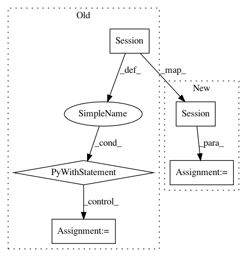

bffeefe23c0c8f372e337a925e8c28b97556e5fc,Reinforcement_learning_TUT/8_Actor_Critic_Advantage/AC_continue_Pendulum.py,,,#,120
Before Change
actor = Actor(n_features=env.observation_space.shape[0], action_range=[env.action_space.low[0], env.action_space.high[0]], lr=0.001)
critic = Critic(n_features=env.observation_space.shape[0], lr=0.002)
with tf.Session() as sess:
if OUTPUT_GRAPH:
tf.summary.FileWriter("logs/", sess.graph)
actor.sess, critic.sess = sess, sess // define the tf session
tf.global_variables_initializer().run()
for i_episode in range(3000):
observation = env.reset()
t = 0
ep_rs = []
while True:
// if RENDER:
env.render()
action, mu, sigma = actor.choose_action(observation)
observation_, reward, done, info = env.step(action)
reward /= 10
TD_target = reward + GAMMA * critic.evaluate(observation_) // r + gamma * V_next
TD_eval = critic.evaluate(observation) // V_now
TD_error = TD_target - TD_eval
actor.update(s=observation, a=action, adv=TD_error)
critic.update(s=observation, target=TD_target)
observation = observation_
t += 1
// print(reward)
ep_rs.append(reward)
if t > EPISODE_TIME_THRESHOLD:
ep_rs_sum = sum(ep_rs)
if "running_reward" not in globals():
running_reward = ep_rs_sum
else:
running_reward = running_reward * 0.9 + ep_rs_sum * 0.1
if running_reward > DISPLAY_REWARD_THRESHOLD: RENDER = True // rendering
print("episode:", i_episode, " reward:", int(running_reward))
break
After Change
env = gym.make("Pendulum-v0")
env.seed(1) // reproducible
sess = tf.Session()
actor = Actor(sess, n_features=env.observation_space.shape[0], action_range=[env.action_space.low[0], env.action_space.high[0]], lr=LR_A)
critic = Critic(sess, n_features=env.observation_space.shape[0], lr=LR_C)
In pattern: SUPERPATTERN
Frequency: 4
Non-data size: 5
Instances
Project Name: MorvanZhou/tutorials
Commit Name: bffeefe23c0c8f372e337a925e8c28b97556e5fc
Time: 2017-03-10
Author: morvanzhou@gmail.com
File Name: Reinforcement_learning_TUT/8_Actor_Critic_Advantage/AC_continue_Pendulum.py
Class Name:
Method Name:
Project Name: mortendahl/tf-encrypted
Commit Name: f54c2b1361fb86f55a36064158c6baa658ffffb9
Time: 2019-06-26
Author: suriyaku@gmail.com
File Name: examples/mnist/run.py
Class Name:
Method Name:
Project Name: apple/coremltools
Commit Name: 40220c28a320d5fe351b893e256db48deb864d09
Time: 2020-07-17
Author: aseem.elec@gmail.com
File Name: coremltools/converters/mil/frontend/tensorflow/tf_graph_pass/constant_propagation.py
Class Name:
Method Name: _constant_propagation
Project Name: tensorflow/cleverhans
Commit Name: fcdff410dd2eb91ec850734a8ea4c0c72e19d9b9
Time: 2018-10-03
Author: papernot@google.com
File Name: tests_tf/test_defenses.py
Class Name: TestDefenses
Method Name: test_feature_pairing